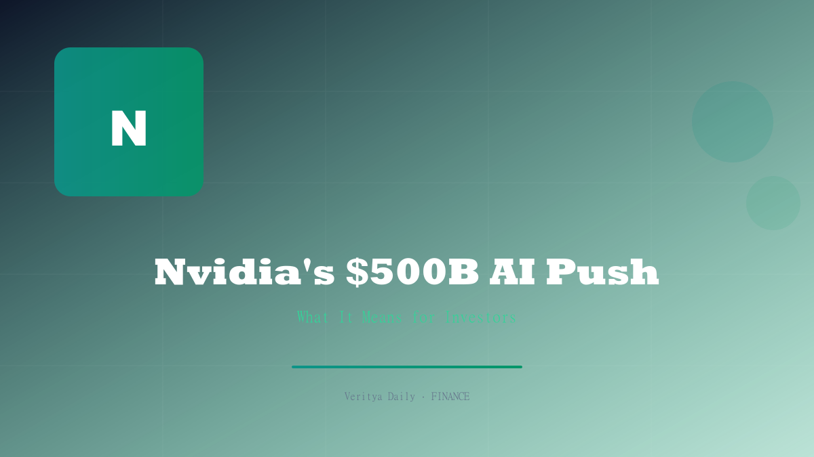

Nvidia's $500B AI Infrastructure Push

Key Takeaways
- Nvidia signed MOUs with six major Wall Street firms to establish AI compute as a bankable asset
- CoreWeave's backlog crossed $100B, with shares jumping 9% on the news
- AI infrastructure demand is exploding beyond traditional tech companies
- Institutional capital is flowing into GPU-backed financing structures
- The $500B figure represents a paradigm shift in how compute is valued and financed
Table of Contents
The $500 Billion MOU: What Nvidia Actually Signed
Nvidia has taken a unprecedented step by signing memoranda of understanding (MOUs) with six major Wall Street firms to establish AI compute as a bankable infrastructure asset. This is not a product launch or a chip deal — it is a structural redefinition of how the financial system values and finances computing power.
The $500 billion figure represents the total infrastructure commitment framework that these MOUs outline. The agreements create a pathway for Wall Street to finance, securitize, and trade GPU compute capacity the same way it has historically handled real estate, energy infrastructure, or telecommunications bandwidth.
What makes this remarkable is the speed of institutional adoption. Less than three years ago, AI compute was seen as an operational expense — something companies bought and depreciated. Nvidia's MOUs signal that the largest financial institutions in the world now view GPU clusters as long-life infrastructure assets worthy of dedicated financing structures.
AI Compute as a Bankable Asset Class
The concept of "bankable" infrastructure assets is well-established in finance. A bankable asset has predictable cash flows, can be used as collateral, and supports long-term financing. Traditional examples include toll roads, power plants, and cell towers. Nvidia is now making the case that AI compute clusters belong in the same category.
The logic is straightforward: AI workloads generate predictable, long-duration revenue streams. Companies sign multi-year contracts for GPU access, creating the kind of contracted cash flows that infrastructure investors love. The demand is not speculative — it is backed by signed contracts worth hundreds of billions of dollars.
"AI compute is becoming the new real estate. The difference is that it depreciates faster — but the cash flows during its useful life are extraordinary." — Infrastructure fund analyst
For Wall Street, this opens up an entirely new category of structured finance:
- GPU-backed securities: Bundling compute contracts into tradable instruments
- Infrastructure funds: Dedicated funds for AI compute deployment
- Lease financing: Banks finance GPU purchases, lease them to operators
- Collateralized lending: Using GPU clusters as loan collateral
CoreWeave's $100B Backlog: The Proof of Concept
If Nvidia's MOUs represent the vision, CoreWeave's backlog is the proof. The AI cloud computing company saw its shares jump 9% after reporting that its contracted revenue backlog crossed the $100 billion mark — a staggering figure that validates the AI infrastructure thesis.
CoreWeave's backlog consists of multi-year, contracted GPU compute agreements with enterprises across industries. These are not speculative orders; they are binding commitments that provide visibility into revenue for years to come. This is exactly the kind of predictable cash flow profile that makes an asset "bankable."
| Metric | CoreWeave | Industry Context |
|---|---|---|
| Contracted Backlog | $100B+ | Larger than many Fortune 100 market caps |
| Share Price Move | +9% (single day) | On backlog announcement |
| Revenue Visibility | Multi-year contracts | Typical 3-5 year terms |
| Asset Class | AI Cloud / GPU Compute | Emerging infrastructure category |
The CoreWeave milestone is significant because it demonstrates that demand for AI compute is not slowing — it is accelerating. The $100B backlog also provides a concrete data point for Wall Street firms evaluating the risk-return profile of GPU-backed financing.
What This Means for Nvidia Stock and Valuation
For Nvidia investors, the MOUs represent more than just a headline — they fundamentally strengthen the investment case. By establishing AI compute as a bankable asset class, Nvidia is creating a financing ecosystem that ensures sustained demand for its GPUs over the long term.
Here's the key insight: Nvidia's biggest risk has always been the cyclicality of semiconductor demand. If AI spending slowed, GPU orders could collapse. But by enabling Wall Street to finance AI infrastructure the way it finances power plants or toll roads, Nvidia is creating a durable demand floor that smooths out the traditional semiconductor cycle.
The implications for Nvidia's valuation are significant:
- Revenue visibility improves as financing structures enable longer-term contracts
- Customer base broadens as financing makes GPUs accessible to more buyers
- Switching costs increase as the CUDA ecosystem becomes more entrenched in bankable infrastructure
- Competitive moat widens as the financing ecosystem favors incumbent scale
The AI Infrastructure Supply Chain: Who Benefits
Nvidia's $500 billion push doesn't just benefit Nvidia. The entire AI infrastructure supply chain stands to gain from the institutionalization of compute as an asset class. Investors should be looking at the second-derivative beneficiaries as well.
Key beneficiaries beyond Nvidia include:
- Data center REITs: Companies that own the physical facilities housing GPU clusters — demand for their space will surge
- Power infrastructure: AI compute requires enormous electricity; utilities and power equipment manufacturers benefit
- Cooling and networking: Liquid cooling companies and high-speed networking providers
- AI cloud operators: CoreWeave and similar companies that operate GPU fleets
- Memory and storage: HBM (High Bandwidth Memory) suppliers and enterprise SSD makers
The breadth of the supply chain means investors can gain exposure to the AI infrastructure theme without concentrating risk in a single stock. ETFs focused on AI infrastructure and semiconductors offer diversified access to the trend.
Risks and What Investors Should Watch
While the AI infrastructure thesis is powerful, investors need to be aware of the risks. Not all $500 billion in MOUs will translate into deployed capital — MOUs are non-binding, and actual financing commitments will depend on market conditions, regulatory approvals, and the performance of early-stage AI infrastructure investments.
Key risks to monitor:
- GPU depreciation: Unlike real estate, GPUs depreciate rapidly. Today's H100 will be obsolete in 3-4 years, creating refinancing risk
- Technology shifts: New chip architectures or quantum computing could disrupt the current GPU-centric paradigm
- Regulatory scrutiny: Antitrust concerns around Nvidia's market dominance could limit the scope of these partnerships
- Demand concentration: If a handful of mega-cap tech companies reduce AI spending, the ripple effects could be severe
- Interest rate sensitivity: Infrastructure financing is rate-sensitive; higher rates could slow deployment
For investors, the key metrics to watch are: (1) CoreWeave's revenue conversion from backlog, (2) the rate of GPU deployment at data center REITs, (3) Nvidia's data center revenue growth, and (4) the spread between AI infrastructure bond yields and traditional infrastructure debt.
The $500 billion AI infrastructure push by Nvidia is not just a big number — it represents a fundamental shift in how the financial system values computing power. For investors willing to understand the nuances, the opportunities extend far beyond Nvidia itself.
Disclaimer: This article is for informational purposes only and does not constitute financial advice. Readers should conduct their own research and consult with a licensed financial advisor before making investment decisions.